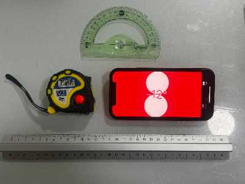

Medición Colaborativa de la Altura de un edificio
Objetivo
Aplicar conocimientos trigonométricos para medir la altura de edificios o monumentos en el entorno urbano, desarrollando habilidades en la toma de datos, cálculo matemático y presentación de resultados.
Organización del trabajo
Los estudiantes trabajarán en equipos de 3 o 4 integrantes, asumiendo los siguientes roles:
- Medidor: Se encarga de tomar las medidas con un flexómetro y un inclinómetro digital, utilizando una aplicación móvil.
- Calculador: Aplica las razones trigonométricas para obtener la altura del edificio y verifica los cálculos.
- Documentador: Realiza fotografías del proceso de medición y registra las mediciones, los cálculos y el procedimiento detallado en un cuaderno de campo.
- Presentador: Explica los resultados y el proceso seguido a la clase mediante una presentación digital en Geogebra.
Producto final
Cada equipo elaborará como producto final una recreación en Geogebra de la medición de la altura del edficio, incorporando fotografías y las medidas utilizadas.
Desarrollo de la actividad
1. Selección del edificio y toma de medidas
Planificación previa
Cada equipo seleccionará un edificio cercano y determinará las herramientas necesarias:
- Flexómetro para medir distancias.
- App de medición de ángulos en el móvil (Clinometer, Theodolite o Measure)
- Cuaderno de campo para anotar datos.
Medición
El Medidor se ubicará en un punto adecuado para medir la distancia desde la base del edificio hasta su posición con el flexómetro.
Luego, con la app de inclinómetro, registrará el ángulo de elevación (α) desde su posición hasta la cima del edificio.
El Documentador anotará todos los datos en el cuaderno de campo.

José Tárraga. Herramientas de medida (CC0)
2. Cálculo de la altura del edificio
El Calculador aplicará la razón trigonométrica de la tangente para determinar la altura:
h = d⋅tan(α)
Donde:
h es la altura desconocida del edificio
d es la distancia del observador a la base de edificio.
α es el ángulo de elevación
El Documentador registrará los cálculos en el informe del equipo.
3. Elaboración y presentación del informe digital
Cada grupo preparará un informe digital en Geogebra (https://www.geogebra.org/) , integrando los siguientes elementos:
- Fotografías del edificio y del proceso de medición.
- Capturas de pantalla de GeoGebra con la representación de los cálculos.
- Explicación detallada del procedimiento seguido.
- Resultados finales y análisis de posibles errores en la medición.
- El enlace de la actividad de Geogebra se adjuntará como tarea en la plataforma Classroom.
El Presentador se encargará de exponer los resultados ante la clase mediante una presentación digital. Tras las exposiciones, se compararán los cálculos entre grupos y se analizarán posibles diferencias.
Durante todo el proceso, cada equipo debe actualizar e Plan de Autorregulacion:
Evaluación y reflexión
Tras completar la actividad, cada grupo reflexionará en la exposición sobre:
- ¿Cuáles fueron los principales desafíos al tomar las medidas?
- ¿Cómo podrían mejorar la precisión de los cálculos?
- ¿Qué diferencias encontraron entre los resultados de los distintos grupos?
La evaluación final de la actividad será realizada a través de una rubrica en la plataforma Classroom.